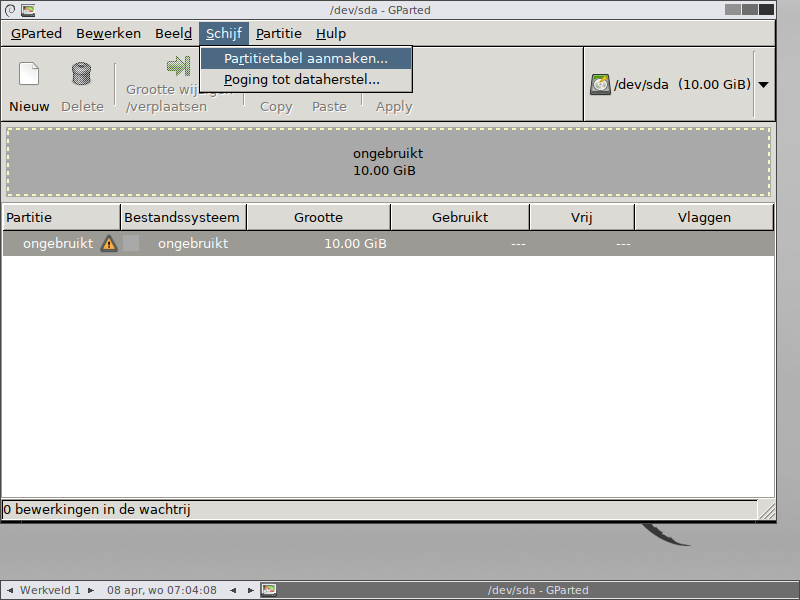
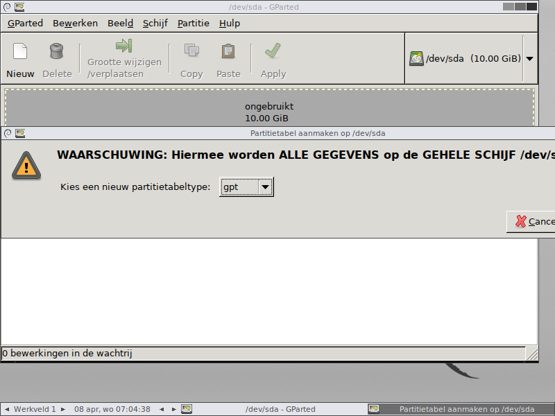
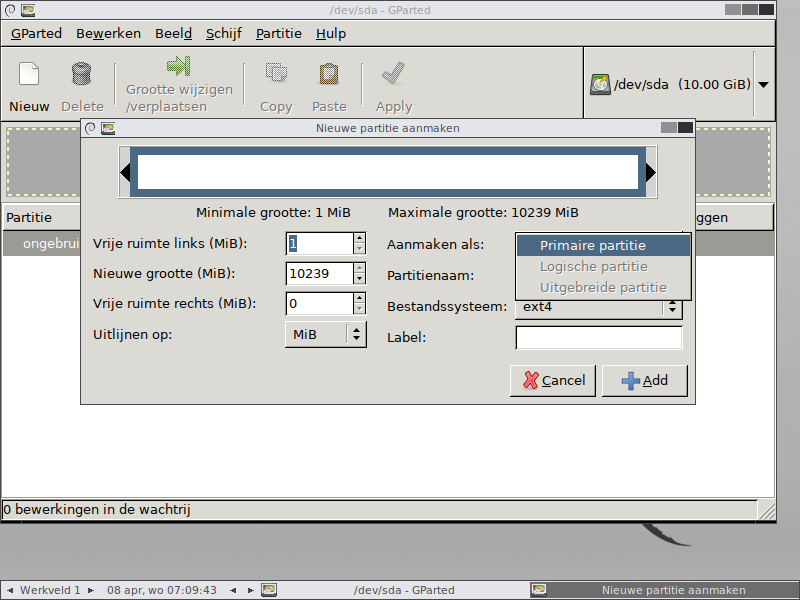

De tweede schijf van je oefenmachine is nog leeg. Daarop maak je een GPT-partitietabel, en je gaat na wat er verandert aan de partities die je erin kan maken.
Kies /dev/sdb in de keuzelijst rechtsboven.
Kies in het menu Schijf voor Partitietabel aanmaken.

Kies als partitietabeltype gpt en bevestig.

/dev/sdb bezig bentDe titelbalk van het venster noemt de schijf waarop de bewerking gebeurt. Staat er
/dev/sda, dan gooi je het werk van de vorige twee pagina's weg.
Maak op /dev/sdb vijf partities van elk ongeveer 2 GB. Kijk bij het aanmaken
naar de lijst Aanmaken als.

Er komt geen waarschuwing bij de vijfde, en de twee andere soorten blijven de hele tijd onbruikbaar. In GPT is er maar één soort partitie, en er passen er 128 in de lijst. Waarom dat zo is, staat op Partitietabellen.
Daarmee heb je met beide partitietabellen gewerkt. Op de volgende pagina staat het document dat je invult en indient, en dat werk gebeurt op de machine met Ubuntu en niet op deze oefenmachine.